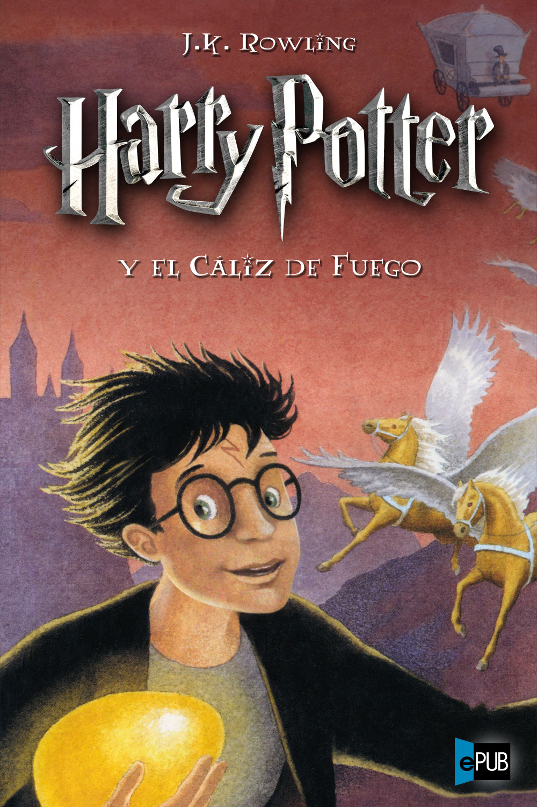

Harry Potter y el Caliz de Fuego
Autor: J.K. Rowling
Harry empieza el cuarto curso en Hogwarts, y hay un profesor nuevo, el profesor Ojoloco Moody, quien ensenia Defensa contra las artes oscuras. Ese año en Hogwarts se celebra el Torneo de los Tres Magos, en el cual los que quieran participar han de ser mayores de 17 años. Cabe destacar que tambien habia representantes de otros colegios, no solo de Hogwarts. Los participantes tenian que introducir un trozo de pergamino con su nombre en el Caliz de Fuego.
En la noche en que el caliz decidiria quiénes serian los tres elegidos pasa una cosa muy extrania, pues salieron cuatro cuando deberian haber sido tres: Cedric de Hogwarts, Victor Krum de Durmstrang, Fleur Delacour de Beauxbatons y Harry Potter, tambien de Hogwarts. Harry se quedó atonito, pues el no habia introducido su nombre en el Caliz de Fuego. Pero aunque no lo hubiera puesto era obligatorio concursar.
